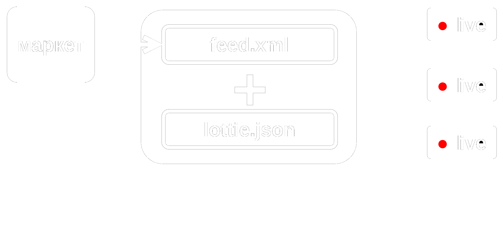

Сервис рекламного стриминга
video-feed
Технологии рекламного видео-продакшена
- Использование GPU в производстве видео
- Рекламные live стримы
- Рекламный video-feed для стримеров
2 основные задачи
видео-продакшена
- Подготовка шаблонов рекламы
- Эффективный рендер видео
Blender
- + Гибкость
- + Производительность
- + Качество картинки
- –– Подготовка шаблонов
Adobe AE
- ++ Качество картинки
- + Подготовка шаблонов
- ~ Производительность
- –– Гибкость
Web-view
- ++ Производительность
- + Гибкость
- ~ Качество кsартинки
- – Подготовка шаблонов
Lottie
- ++ Производительность
- + Подготовка шаблонов
- + Гибкость
- ~ Качество картинки
Преимущества Lottie
- + Открытый анимационный json формат
- + Прямой экспорт анимаии из Adobe AE
- + Поддерживается Google и Samsung
- + Наличие плееров с поддержкои GPU
- ~ Занял нишу векторной web-анимации
Применение
- Эффективный рендер видео рекламы
- Рекламные стримы "магазин на диване"
- Рекламные интеграции для стримеров
- Интеграции для онлайн кинотеатров
Сервис преобразования продуктового фидa
в видео-поток
Обратная связь с площадкой
Преимущества живого рекламного стрима
- Вовлечение аудитории за счет интерактивности
- Реакция на действия аудитории, события площадки
- Возможность персонификации
О стриминге
- Суммарно в 2020 twitch собрал 1.2 млрд часов просмотров
- С началом пандемии, многие рекламодатели и бренды ушли в индустрию стриминга
- Из стран СНГ ежемесячно в эфир выходит боле 100 тысяч стримеров
- Более 60% стримеров монетизирует свой эфир, большинство через специальные сервисы
Варианты интерактива
- Промокод за длительный просмотр контента
- Скидки за переходы / регистрации
- Голосование за скидку на категорию товаров
Дальнейше развитие
- Изучение ограничений формата, проработка экспорта, поддержка видео-ассетов
- Разработка онлайн инструментов для редактирования шаблонов
- Серверный GPU рендер, инструменты транскодинга
Команда
- Павел Голик - backend python / django
- Павел Холод - frontend / Angular
- Дмитрий Лунин - ML / python / js
- Сергей Евдокимов - Дизайн
- Владимир Серегин - R&D